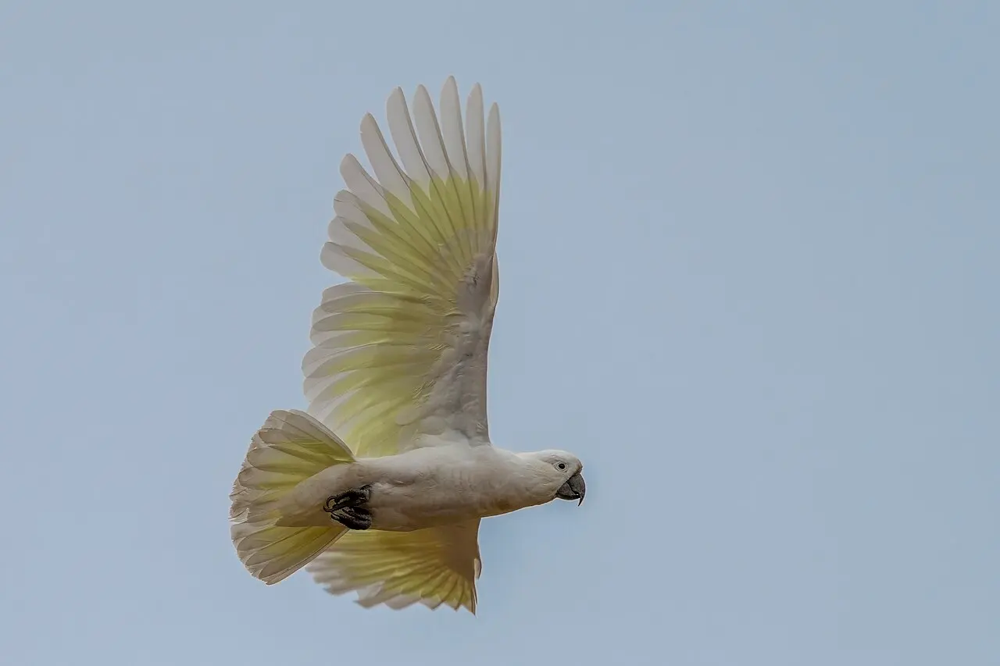

Módulo 7 Aula 30
Corpo, cor e comportamento
A cacatua tem detalhes de corpo que contam como ela vive: a crista que fala, as penas que soltam pó, o pé que agarra.
- Para que servem a crista e as penas de pó
- Como os papagaios produzem os amarelos e vermelhos
- O que o bico e o pé mostram sobre o modo de vida

Ave da aula
Cacatua-de-crista-amarela Cacatua galerita
A crista
Quase todas as cacatuas têm crista[1], e ela pode ser levantada: é uma . Na cacatua-negra-de-cauda-vermelha, ela forma uma espécie de capacete quando é levantada e empurrada para a frente[6]. Na de palmeira, a crista é feita de fios finos[7]. Mexa no controle e veja uma crista subir e descer.
Desenho esquemático. Este curso não interpreta o que cada posição da crista significa, porque não encontramos uma fonte confiável para isso.
Penas de pó
As crescem continuamente e se desfazem nas pontas, formando um pó fino que ajuda a limpar e a impermeabilizar a plumagem[2]. Nas cacatuas, elas são bem desenvolvidas[1].
Cores de papagaio
Os papagaios têm pigmentos exclusivos, as , que dão amarelo e vermelho às penas[3]. Um estudo com espécies das três famílias de papagaios, incluindo as cacatuas, mostrou que todas usam o mesmo conjunto de cinco pigmentos para colorir de vermelho, o que indica que esse sistema se manteve por muito tempo na evolução[3]. Em espécies mais avermelhadas, há mais pigmento nas penas[3].
Bico e pé
O bico de papagaio tem a parte de cima móvel, presa ao crânio por uma dobradiça, e é muito forte[4]. O pé é : dois dedos para a frente e dois para trás, comum em papagaios e cacatuas[5]. Juntos, bico e pé permitem segurar sementes, descascá-las e trepar[4, 5].
Vida longa
As cacatuas vivem muito. O recorde de longevidade documentado em cativeiro para a cacatua-de-crista-amarela é de um indivíduo chamado “Cocky”, que viveu mais de 57 anos no zoológico de Londres[9]. Um bicho de estimação dessa espécie é um compromisso de décadas[9].
Um aviso. Cacatuas são aves silvestres e o comércio delas ameaça espécies (aula 32). Se pensa em ter uma ave, informe-se antes com os órgãos ambientais sobre o que a lei permite.
Palavras novas
Teste rápido
Sem nota. Se errar, tente de novo.
O que a cacatua pode fazer com a crista?
Para que servem as penas de pó?
Como é o pé de uma cacatua?
Referências e leitura complementar
Onde conferir o que foi dito nesta aula. Os números entre colchetes no texto levam a estas fontes. Os links abrem em outra aba.
- CockatooEncyclopaedia Britannica · inglêsVisão geral: distribuição, crista, plumagem e diferenças em relação a outros papagaios.
- Powder downEncyclopaedia Britannica · inglêsPenas que se desfazem em pó fino e ajudam a limpar e impermeabilizar a plumagem; bem desenvolvidas em cacatuas.
- Distribution of unique red feather pigments in parrotsPubMed Central (artigo científico) · inglêsOs pigmentos exclusivos dos papagaios (psitacofulvinas), que dão amarelos e vermelhos.
- Psittaciform: Bill and skullEncyclopaedia Britannica · inglêsO bico dos papagaios: maxila móvel presa ao crânio por uma dobradiça, fileiras ásperas na parte de dentro do bico.
- ZygodactylyEncyclopaedia Britannica · inglêsPé com dois dedos para a frente e dois para trás.
- Red-tailed Black-CockatooAustralian Museum · inglês · leitura complementarFicha da cacatua-negra-de-cauda-vermelha, com crista erétil.
- Palm cockatooEncyclopaedia Britannica · inglês · leitura complementarFicha da cacatua-de-palmeira.
- Sulphur-crested CockatooAustralian Museum · inglêsFicha da cacatua-de-crista-amarela: tamanho, hábitat, alimentação e ninho.
- Sulphur-crested cockatoo (Cacatua galerita): longevity, ageing, and life historyAnAge · Universidade de Liverpool · inglêsRecorde de longevidade em cativeiro documentado para a espécie.
Os endereços foram abertos e conferidos em 29/09/2026. Alguns sites de revistas científicas e de órgãos oficiais exigem verificação humana e não puderam ser testados por robô. Sites externos podem mudar ou sair do ar.
Para levar
Em três frases
- A crista é erétil: a cacatua a levanta e abaixa, e ela faz parte da aparência de quase todas as espécies.
- As penas de pó se desfazem em um pó fino, que ajuda a limpar e a impermeabilizar a plumagem.
- Os amarelos e vermelhos dos papagaios vêm de pigmentos que só eles têm, as psitacofulvinas.